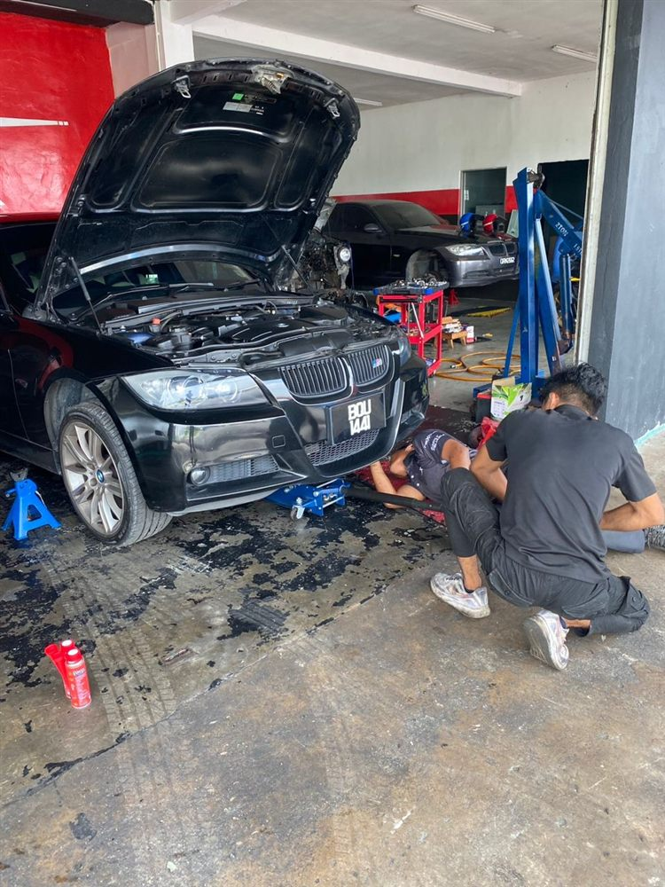
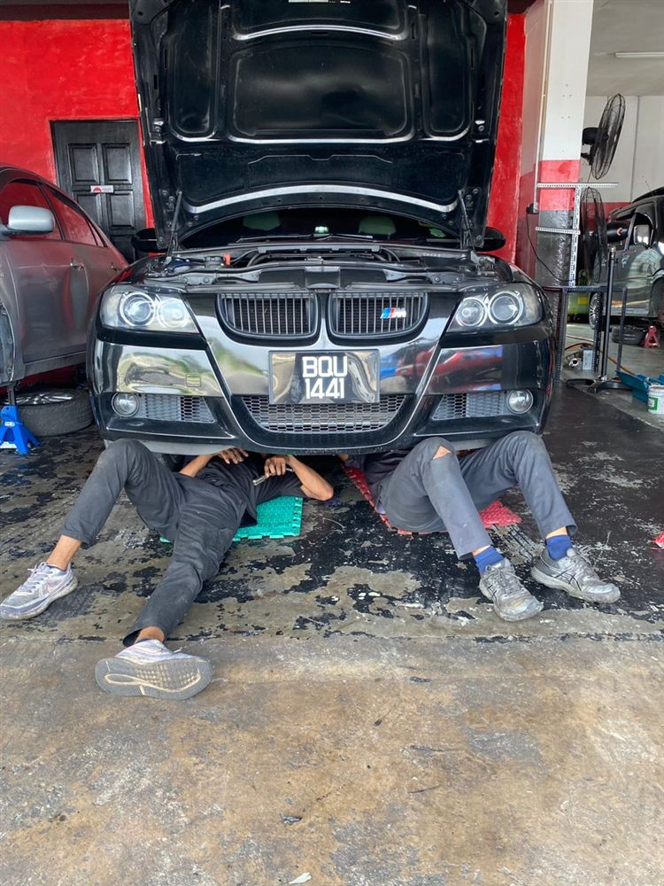
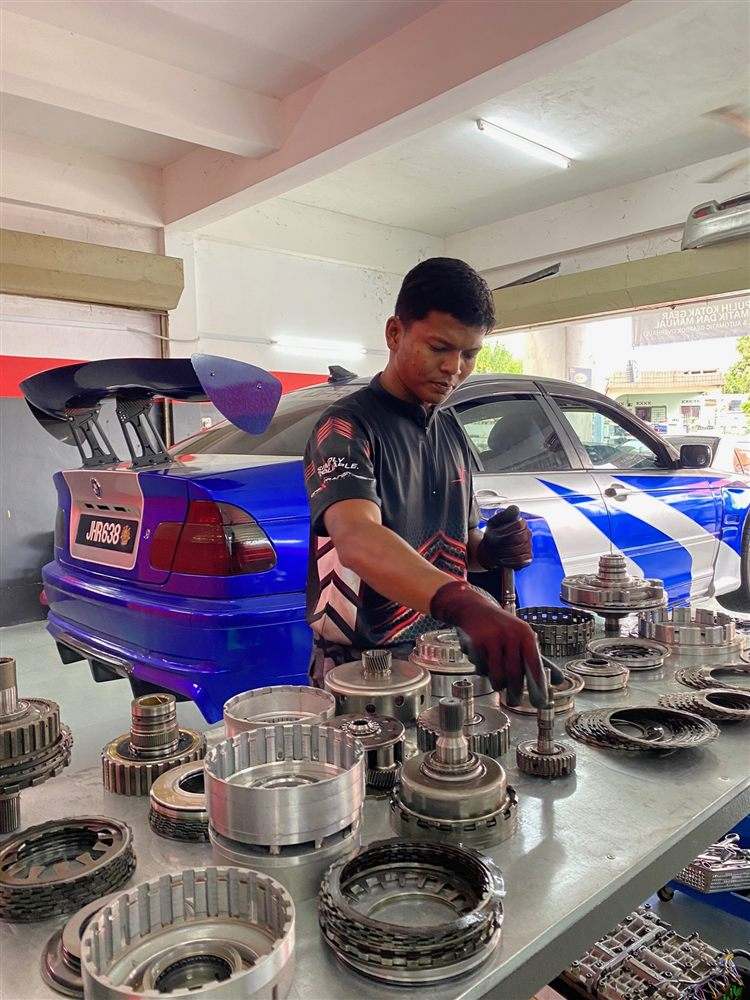
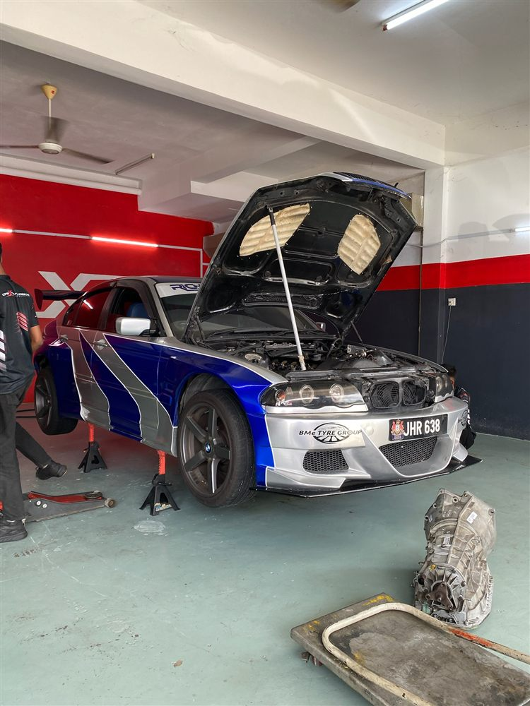
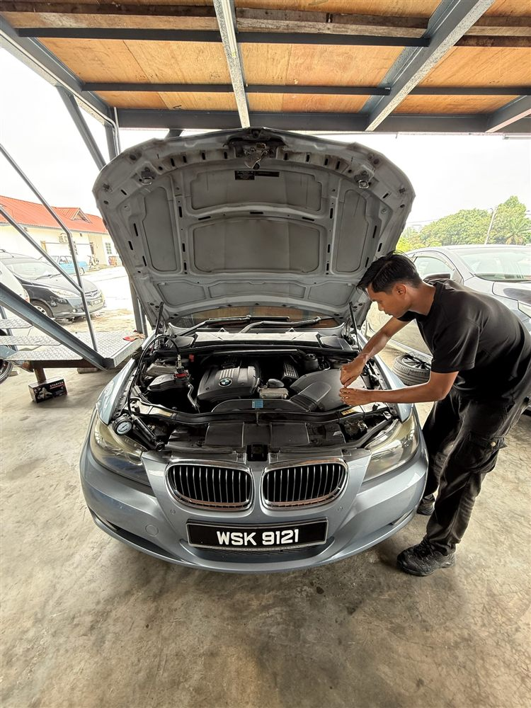
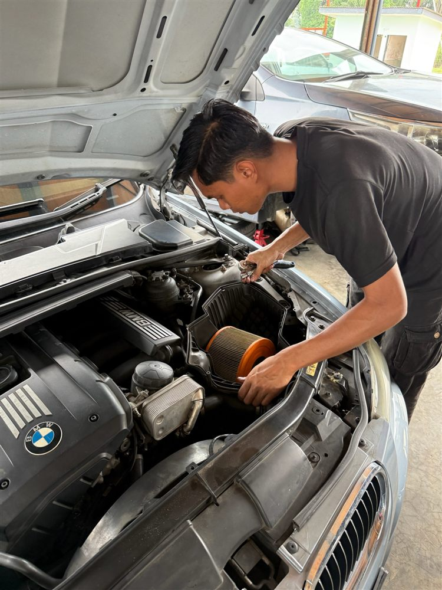

Automatic transmission repair, service & diagnostics for all BMW models. Just 15 minutes from Shah Alam city centre.
Shah Alam BMW owners — you don't need to drive to KL for specialist transmission work. One X Transmision in nearby Klang provides the same level of expertise at workshop-direct pricing. We're just 15 minutes away via Federal Highway or KESAS.
Full scan of EGS (gearbox control module) plus live data analysis. We measure shift times, torque converter slip percentage, ATF temperature trends, and gear ratio accuracy — all against our 8-rule transmission analyser thresholds.
Duration: 1–2 hours including road test
From RM 150
Drain and fill with correct OEM-spec fluid for your gearbox. ZF Lifeguard 6 for 6HP, Lifeguard 8 for 8HP series. New filter, gasket, and adaption reset. We always check ATF condition — colour, smell, and debris.
Interval: Every 60,000 km in Malaysian climate
From RM 800
Solenoid replacement, sleeve repair, valve body service for ZF mechatronic units. Common on high-mileage E90, E60, and E70 models. Symptoms: harsh 2→3 shift, delayed reverse engagement, gearbox warning light.
DTCs: P0700, P0730, P0732, P0733
From RM 2,000
Complete rebuild with new lockup clutch, bearings, and re-balancing. We verify post-repair with live slip measurement — must read <5% at cruise speed, per our TRANS_T6 diagnostic threshold.
Symptoms: Shudder at 60–80 km/h, RPM flare on lockup, P0741
From RM 2,500
Full strip-down, clutch pack inspection, shaft and bearing replacement. Rebuilt to factory specification. Includes post-rebuild road test with full diagnostic verification. Written warranty provided.
For: Multiple gearbox DTCs, metal in ATF, complete gear loss
From RM 6,000
After ATF service or repairs, the gearbox adaption values need resetting so the TCU relearns shift points. We perform reset and supervised relearn to ensure smooth shifts from day one.
Included with: All ATF services and repairs
Standalone: RM 100
Every transmission job at One X Transmision is completed in-house, from diagnostic scan to post-repair road test verification.






Shah Alam traffic — Federal Highway, Persiaran Kayangan, LKSA — means constant stop-start driving. This is the hardest operating condition for an automatic gearbox.
| Problem | Typical BMW Models | Warning Signs | Repair Cost |
|---|---|---|---|
| ATF degradation | All BMW automatics | Rough shifts, slow engagement | RM 800–1,200 |
| Mechatronic failure | E90, E60, E70 (ZF 6HP) | Harsh shifts, limp mode, P0700 | RM 2,000–4,500 |
| Torque converter shudder | F10, F30 (ZF 8HP) | Vibration at 60–80 km/h | RM 2,500–7,000 |
| Solenoid wear | E90 (GM 6L45) | Erratic shifts, P0750–P0770 | RM 1,500–3,000 |
| Complete gearbox failure | High-mileage E70, E60 | No drive, metal in ATF | RM 6,000–15,000 |
Don't ignore rough shifts or warning lights. Early diagnosis saves thousands in repair costs. WhatsApp us a video of your transmission issue — we'll give you an honest assessment.